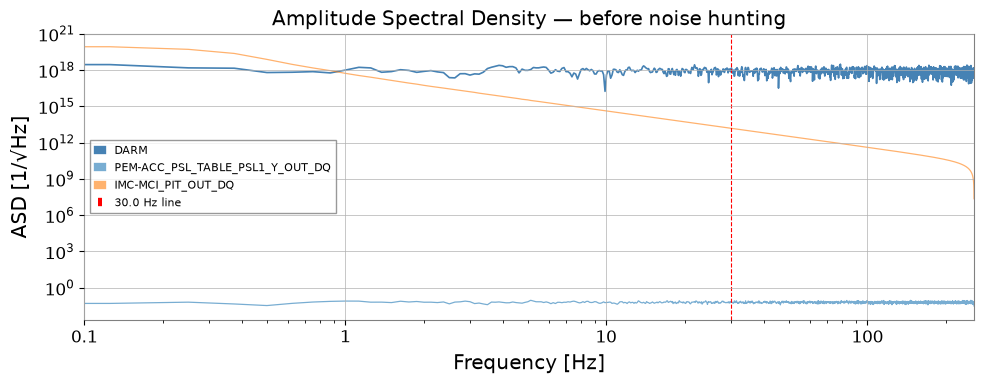
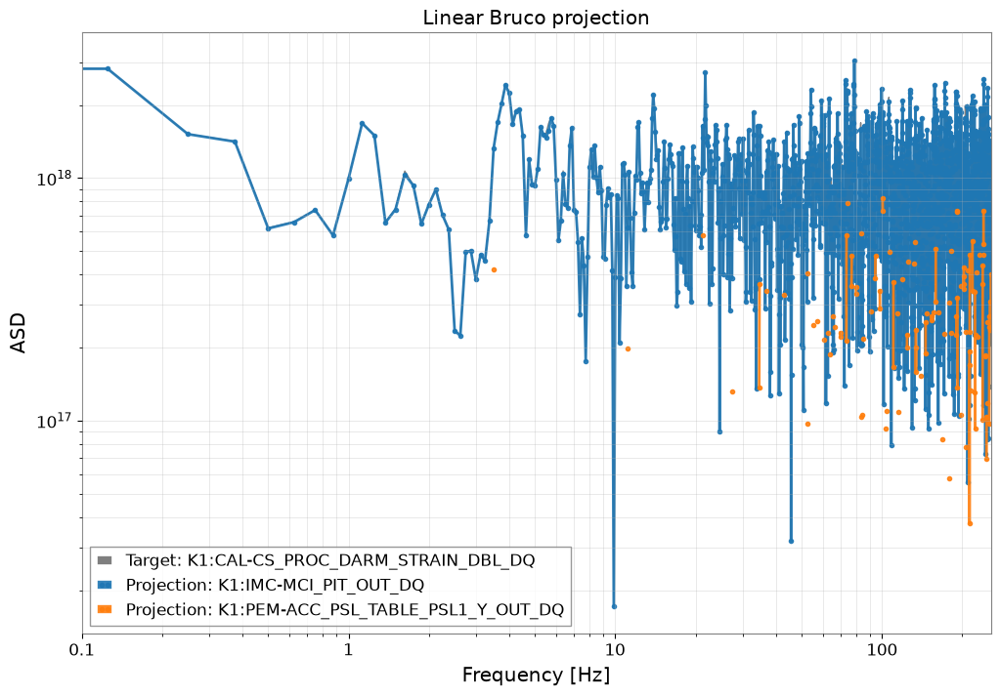
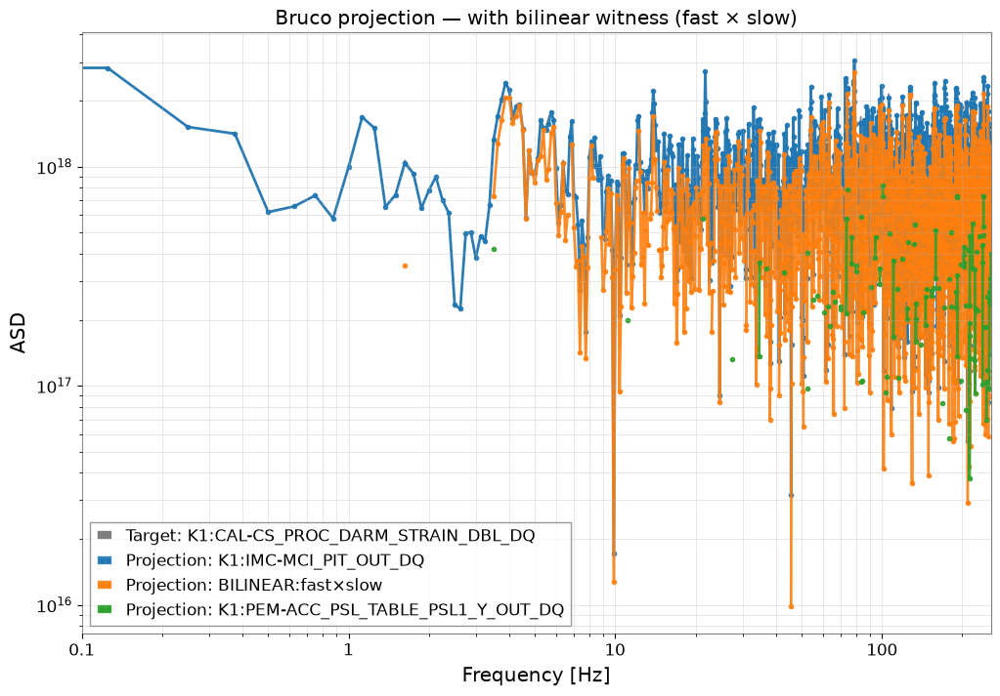
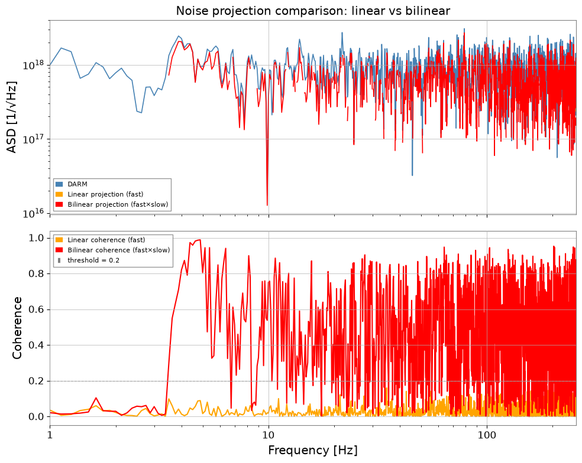
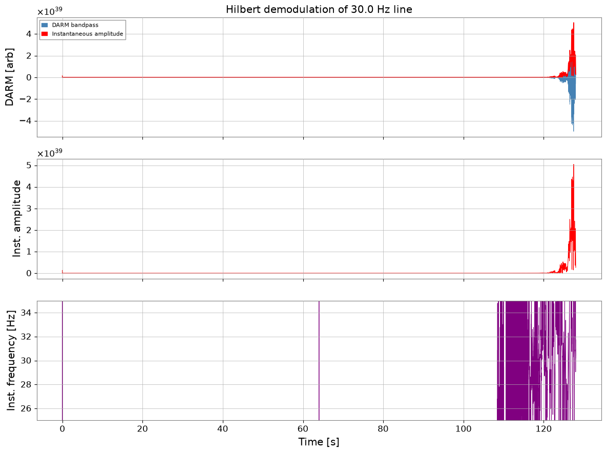
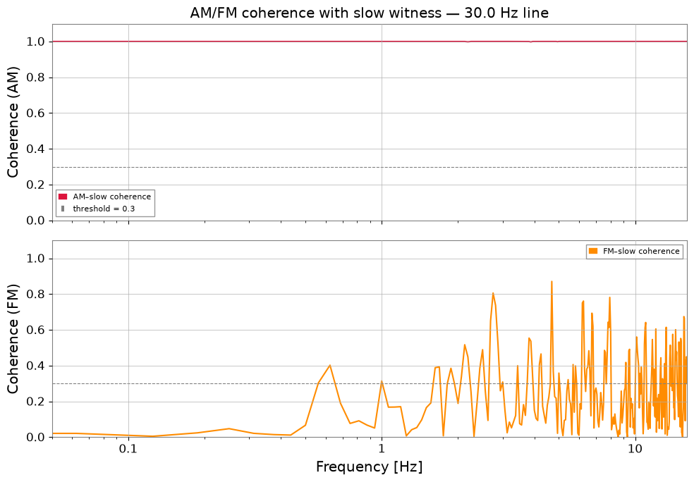
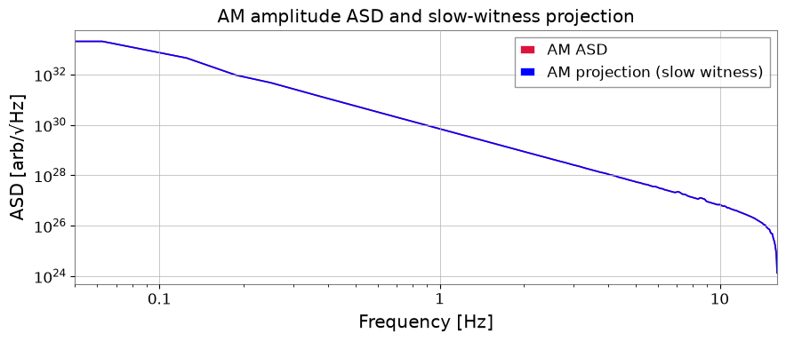

Note
This page was generated from a Jupyter Notebook. Download the notebook (.ipynb)
[1]:
# Skipped in CI: Colab/bootstrap dependency install cell.
Bruco: Bilinear Coupling and AM/FM Demodulation

Standard Bruco scans only detect linear coherence between DARM and auxiliary channels. Real interferometer noise often involves nonlinear coupling mechanisms that a linear scan misses entirely. This tutorial covers two common advanced patterns found in O4 commissioning data and distilled from the gwexpy usage catalog:
Bilinear coupling detection — build a synthetic witness
fast × slowand run Bruco on the extended channel set.Hilbert AM/FM demodulation — extract the instantaneous amplitude / frequency of a spectral line and correlate these slowly-varying envelopes with environmental sensors.
The physical question in both cases is the same: which slow environmental or control variable is modulating a higher-frequency feature seen in DARM, and how should we encode that hypothesis so Bruco can test it.
Prerequisites:
Setup
[2]:
import warnings
warnings.filterwarnings("ignore", category=UserWarning)
warnings.filterwarnings("ignore", category=DeprecationWarning)
# ruff: noqa: I001
import matplotlib.pyplot as plt
import numpy as np
from astropy import units as u
from scipy.signal import hilbert
from gwexpy.analysis import Bruco
from gwexpy.timeseries import TimeSeries, TimeSeriesDict
1. Mock Data Generation
We synthesize a DARM channel that contains two types of noise beyond the Gaussian floor:
Noise type |
Mechanism |
Signature |
|---|---|---|
Bilinear |
|
Sidebands around fast-channel frequency |
AM line |
|
30 Hz line whose amplitude fluctuates |
A linear Bruco scan will not detect bilinear coupling because the witness channels are individually incoherent with DARM — only their product is.
Common mistake: concluding that “no coherence” means “no coupling” after only the baseline scan. For bilinear problems, the failure of the linear witness is the expected diagnostic, not a negative result.
[3]:
rng = np.random.default_rng(0)
fs = 512 # sample rate [Hz]
T = 128.0 # duration [s]
n = int(fs * T)
t = np.arange(n) / fs
# ------------------------------------------------------------------
# Independent physical sources
# ------------------------------------------------------------------
# 1. Broadband Gaussian noise — the "true" DARM floor
src_broad = rng.normal(0, 1, n)
# 2. A fast vibration source (e.g. PSL table accelerometer)
# Contains a 116 Hz mechanical resonance driven broadband
src_fast = rng.normal(0, 1, n) # broadband fast channel
# 3. A slow environmental drift (e.g. IMC alignment, thermal)
# Bandwidth 0.1 – 5 Hz
src_slow_raw = rng.normal(0, 1, n)
from scipy.signal import butter, lfilter
b, a = butter(4, [0.1, 5], btype='band', fs=fs)
src_slow = lfilter(b, a, src_slow_raw)
# ------------------------------------------------------------------
# SCENARIO A: BILINEAR COUPLING
# A fast vibration (116 Hz) is amplitude-modulated by the slow drift
# and couples into DARM.
# DARM_bilinear ~ src_fast * src_slow (frequency-shifted sidebands)
# ------------------------------------------------------------------
BILINEAR_COUPLING = 0.6
darm_bilinear = BILINEAR_COUPLING * src_fast * src_slow
# ------------------------------------------------------------------
# SCENARIO B: AM-MODULATED LINE
# A 30 Hz line (e.g. power harmonics) is amplitude-modulated
# by the slow drift → instability visible in Hilbert amplitude
# ------------------------------------------------------------------
LINE_FREQ = 30.0 # Hz
LINE_AMP = 0.4
AM_DEPTH = 0.5 # modulation index
carrier = np.sin(2 * np.pi * LINE_FREQ * t)
envelope = 1 + AM_DEPTH * src_slow / (np.std(src_slow) + 1e-10)
darm_am = LINE_AMP * carrier * np.clip(envelope, 0, None)
# ------------------------------------------------------------------
# DARM = floor + bilinear noise + AM line
# ------------------------------------------------------------------
darm_raw = src_broad + darm_bilinear + darm_am
target = TimeSeries(
darm_raw, dt=1/fs, unit=u.dimensionless_unscaled,
name="K1:CAL-CS_PROC_DARM_STRAIN_DBL_DQ", t0=0,
)
# Auxiliary channels
# fast witness: correlated with src_fast (pure witness, no slow info)
witness_fast = TimeSeries(
src_fast + 0.2 * rng.normal(0, 1, n),
dt=1/fs, unit=u.dimensionless_unscaled,
name="K1:PEM-ACC_PSL_TABLE_PSL1_Y_OUT_DQ", t0=0,
)
# slow witness: correlated with src_slow
witness_slow = TimeSeries(
src_slow + 0.05 * rng.normal(0, 1, n),
dt=1/fs, unit=u.dimensionless_unscaled,
name="K1:IMC-MCI_PIT_OUT_DQ", t0=0,
)
aux_dict = TimeSeriesDict({
witness_fast.name: witness_fast,
witness_slow.name: witness_slow,
})
print(f"DARM sample rate : {target.sample_rate}")
print(f"Duration : {T} s")
print(f"Aux channels : {list(aux_dict.keys())}")
DARM sample rate : 512.0 Hz
Duration : 128.0 s
Aux channels : ['K1:PEM-ACC_PSL_TABLE_PSL1_Y_OUT_DQ', 'K1:IMC-MCI_PIT_OUT_DQ']
[4]:
fig, ax = plt.subplots(figsize=(10, 4))
asd = target.asd(fftlength=8, overlap=4)
ax.loglog(asd.frequencies.value, asd.value, label="DARM", color="steelblue", lw=1.2)
for name, ts in aux_dict.items():
a = ts.asd(fftlength=8, overlap=4)
ax.loglog(a.frequencies.value, a.value, alpha=0.6, lw=0.9,
label=name.split(":")[-1])
ax.axvline(LINE_FREQ, color="red", ls="--", lw=0.8, label=f"{LINE_FREQ} Hz line")
ax.set_xlim(0.1, fs / 2)
ax.set_xlabel("Frequency [Hz]")
ax.set_ylabel("ASD [1/√Hz]")
ax.set_title("Amplitude Spectral Density — before noise hunting")
ax.legend(fontsize=8)
plt.tight_layout()
plt.show()

2. Linear Bruco Scan (Baseline)
Run the standard Bruco coherence scan with the two individual witnesses. The bilinear coupling between them and DARM should remain invisible here.
[5]:
bruco = Bruco(target_channel=target.name, aux_channels=[])
result_linear = bruco.compute(
fftlength=8.0, overlap=4.0,
target_data=target, aux_data=aux_dict,
top_n=2,
)
print("Linear Bruco scan complete.")
result_linear.plot_projection(coherence_threshold=0.3)
plt.xlim(0.1, fs / 2)
plt.title("Linear Bruco projection")
plt.show()
df_linear = result_linear.to_dataframe(ranks=[0])
print("\nTop coherences (linear scan):")
print(df_linear.sort_values("coherence", ascending=False).head(10).to_string(index=False))
Linear Bruco scan complete.

Top coherences (linear scan):
frequency rank channel coherence projection
49.000 1 K1:IMC-MCI_PIT_OUT_DQ 0.999987 1.691310e+18
241.875 1 K1:IMC-MCI_PIT_OUT_DQ 0.999975 1.162312e+18
193.625 1 K1:IMC-MCI_PIT_OUT_DQ 0.999962 1.043952e+17
200.875 1 K1:IMC-MCI_PIT_OUT_DQ 0.999919 1.092047e+18
53.875 1 K1:IMC-MCI_PIT_OUT_DQ 0.999912 1.399128e+18
108.000 1 K1:IMC-MCI_PIT_OUT_DQ 0.999904 1.332632e+18
92.750 1 K1:IMC-MCI_PIT_OUT_DQ 0.999893 1.490317e+18
170.250 1 K1:IMC-MCI_PIT_OUT_DQ 0.999892 8.576261e+17
249.500 1 K1:IMC-MCI_PIT_OUT_DQ 0.999889 3.130930e+17
114.000 1 K1:IMC-MCI_PIT_OUT_DQ 0.999872 8.098280e+17
3. Bilinear Coupling Detection
Recipe (from O4b DARM-116 Hz and IMMT bilinear commissioning analyses):
fast_hp = witness_fast.highpass(10) # strip DC / slow drift
slow_bp = witness_slow.bandpass(0.1, 5) # keep only slow modulation
witness_bilinear = fast_hp * slow_bp # synthetic bilinear witness
This synthetic channel mimics the product nonlinearity inside the interferometer. If DARM contains fast × slow, the bilinear witness will be highly coherent with it.
We then pass this extended channel set back to Bruco.compute().
Failure-prone pattern: using an overly broad slow-band or leaving DC trends in the fast witness. Both choices smear the product witness and often create impressive-looking but non-local coherence. Keep the slow witness tied to the modulation band you expect physically.
[6]:
# ------------------------------------------------------------------
# Build bilinear witness: fast × slow
# ------------------------------------------------------------------
fast_hp = witness_fast.highpass(10) # remove DC / drift from fast channel
slow_bp = witness_slow.bandpass(0.1, 5) # keep only slow modulation band
witness_bilinear = fast_hp * slow_bp
witness_bilinear.name = "BILINEAR:fast×slow"
aux_extended = TimeSeriesDict({
witness_fast.name: witness_fast,
witness_slow.name: witness_slow,
witness_bilinear.name: witness_bilinear,
})
result_bilinear = bruco.compute(
fftlength=8.0, overlap=4.0,
target_data=target, aux_data=aux_extended,
top_n=3,
)
print("Bilinear-extended Bruco scan complete.")
result_bilinear.plot_projection(coherence_threshold=0.3)
plt.xlim(0.1, fs / 2)
plt.title("Bruco projection — with bilinear witness (fast × slow)")
plt.show()
df_bilinear = result_bilinear.to_dataframe(ranks=[0])
print("\nTop coherences (bilinear-extended scan):")
print(df_bilinear.sort_values("coherence", ascending=False).head(10).to_string(index=False))
Bilinear-extended Bruco scan complete.

Top coherences (bilinear-extended scan):
frequency rank channel coherence projection
49.000 1 K1:IMC-MCI_PIT_OUT_DQ 0.999987 1.691310e+18
241.875 1 K1:IMC-MCI_PIT_OUT_DQ 0.999975 1.162312e+18
193.625 1 K1:IMC-MCI_PIT_OUT_DQ 0.999962 1.043952e+17
200.875 1 K1:IMC-MCI_PIT_OUT_DQ 0.999919 1.092047e+18
53.875 1 K1:IMC-MCI_PIT_OUT_DQ 0.999912 1.399128e+18
108.000 1 K1:IMC-MCI_PIT_OUT_DQ 0.999904 1.332632e+18
92.750 1 K1:IMC-MCI_PIT_OUT_DQ 0.999893 1.490317e+18
170.250 1 K1:IMC-MCI_PIT_OUT_DQ 0.999892 8.576261e+17
249.500 1 K1:IMC-MCI_PIT_OUT_DQ 0.999889 3.130930e+17
114.000 1 K1:IMC-MCI_PIT_OUT_DQ 0.999872 8.098280e+17
[7]:
# Compare DARM ASD vs bilinear projection
asd_darm = target.asd(fftlength=8, overlap=4)
fftlength = 8.0; overlap = 4.0
coh_lin = target.coherence(witness_fast, fftlength=fftlength, overlap=overlap)
coh_bili = target.coherence(witness_bilinear, fftlength=fftlength, overlap=overlap)
proj_lin = asd_darm * coh_lin ** 0.5
proj_bili = asd_darm * coh_bili ** 0.5
# Mask below threshold
THRESH = 0.2
proj_lin.value[coh_lin.value < THRESH] = np.nan
proj_bili.value[coh_bili.value < THRESH] = np.nan
fig, axes = plt.subplots(2, 1, figsize=(10, 8), sharex=True)
axes[0].loglog(asd_darm.frequencies.value, asd_darm.value,
color="steelblue", label="DARM", lw=1.2)
axes[0].loglog(proj_lin.frequencies.value, proj_lin.value,
color="orange", label="Linear projection (fast)", lw=1.2)
axes[0].loglog(proj_bili.frequencies.value, proj_bili.value,
color="red", label="Bilinear projection (fast×slow)", lw=1.2)
axes[0].set_ylabel("ASD [1/√Hz]")
axes[0].set_title("Noise projection comparison: linear vs bilinear")
axes[0].legend(fontsize=8)
axes[0].set_xlim(1, fs / 2)
axes[1].semilogx(coh_lin.frequencies.value, coh_lin.value,
color="orange", label="Linear coherence (fast)")
axes[1].semilogx(coh_bili.frequencies.value, coh_bili.value,
color="red", label="Bilinear coherence (fast×slow)")
axes[1].axhline(THRESH, color="gray", ls="--", lw=0.8, label=f"threshold = {THRESH}")
axes[1].set_xlabel("Frequency [Hz]")
axes[1].set_ylabel("Coherence")
axes[1].legend(fontsize=8)
plt.tight_layout()
plt.show()

4. Hilbert AM/FM Demodulation
When a spectral line is amplitude- or frequency-modulated by a slow environmental perturbation, the line’s carrier frequency shows no direct coherence with the slow channel — but the envelope does.
Recipe (from O4c PEM injection shaker analyses):
darm_bp = darm.bandpass(f_line - FW, f_line + FW) # isolate the line
z = scipy.signal.hilbert(darm_bp.value) # analytic signal
inst_amp = abs(z) # amplitude envelope
inst_freq = diff(unwrap(angle(z))) / (2π Δt) # instantaneous frequency
We then correlate inst_amp and inst_freq with slow auxiliary channels to identify what is driving the amplitude / frequency modulation.
Common mistake: correlating the raw carrier ASD with the slow witness and stopping there. AM/FM problems usually live in the envelope or instantaneous-frequency channel, not in the carrier bin itself.
[8]:
# ------------------------------------------------------------------
# Hilbert AM/FM demodulation of the DARM line at LINE_FREQ Hz
# ------------------------------------------------------------------
FW = 5.0 # half-bandwidth around the line [Hz]
# 1. Isolate the line with a bandpass filter
darm_bp = target.bandpass(LINE_FREQ - FW, LINE_FREQ + FW)
# 2. Analytic signal via Hilbert transform
z = hilbert(darm_bp.value) # complex analytic signal
inst_amp_val = np.abs(z) # instantaneous amplitude (envelope)
inst_phs_val = np.unwrap(np.angle(z))
# instantaneous frequency = d(phase)/dt / (2π)
dt = float(darm_bp.dt.value)
inst_freq_val = np.diff(inst_phs_val) / (2 * np.pi * dt)
# Pad to match length
inst_freq_val = np.append(inst_freq_val, inst_freq_val[-1])
inst_amp = TimeSeries(inst_amp_val, dt=dt, unit=u.dimensionless_unscaled, t0=0,
name="DARM_inst_amp")
inst_freq = TimeSeries(inst_freq_val, dt=dt, unit=u.Hz, t0=0,
name="DARM_inst_freq")
# 3. Quick check: plot amplitude envelope and instantaneous frequency
fig, axes = plt.subplots(3, 1, figsize=(12, 9), sharex=True)
axes[0].plot(darm_bp.times.value, darm_bp.value, lw=0.5, color="steelblue",
label="DARM bandpass")
axes[0].plot(inst_amp.times.value, inst_amp.value, lw=1.2, color="red",
label="Instantaneous amplitude")
axes[0].set_ylabel("DARM [arb]")
axes[0].legend(fontsize=8)
axes[0].set_title(f"Hilbert demodulation of {LINE_FREQ} Hz line")
axes[1].plot(inst_amp.times.value, inst_amp.value, color="red", lw=0.8)
axes[1].set_ylabel("Inst. amplitude")
axes[2].plot(inst_freq.times.value, inst_freq.value, color="purple", lw=0.6)
axes[2].set_ylim(LINE_FREQ - FW, LINE_FREQ + FW)
axes[2].set_ylabel("Inst. frequency [Hz]")
axes[2].set_xlabel("Time [s]")
plt.tight_layout()
plt.show()

5. AM/FM Coherence with Slow Witnesses
The Hilbert envelope (inst_amp) and instantaneous frequency (inst_freq) have their own ASD in the modulation frequency range (0 – 5 Hz here). We compute coherence of these signals with slow environmental witnesses to identify the modulation source.
Failure mode to watch for: if the band-pass around the carrier is too wide, neighbouring lines leak into the analytic signal; if it is too narrow, the demodulated envelope is artificially suppressed. Tune the carrier window to isolate one physical line family.
[9]:
# ------------------------------------------------------------------
# Coherence of AM/FM signals with slow witness
# ------------------------------------------------------------------
# Resample to reduce computation (inst_amp modulation is slow)
RESAMP_FS = 32 # Hz — well above the 5 Hz modulation bandwidth
inst_amp_rs = inst_amp.resample(RESAMP_FS)
inst_freq_rs = inst_freq.resample(RESAMP_FS)
slow_rs = witness_slow.resample(RESAMP_FS)
fftlength_slow = 16.0; overlap_slow = 8.0
coh_am = inst_amp_rs.coherence(slow_rs, fftlength=fftlength_slow,
overlap=overlap_slow)
coh_fm = inst_freq_rs.coherence(slow_rs, fftlength=fftlength_slow,
overlap=overlap_slow)
fig, axes = plt.subplots(2, 1, figsize=(10, 7), sharex=True)
axes[0].semilogx(coh_am.frequencies.value, coh_am.value,
color="crimson", label="AM–slow coherence")
axes[0].axhline(0.3, color="gray", ls="--", lw=0.8, label="threshold = 0.3")
axes[0].set_ylabel("Coherence (AM)")
axes[0].set_title(f"AM/FM coherence with slow witness — {LINE_FREQ} Hz line")
axes[0].legend(fontsize=8)
axes[0].set_ylim(0, 1.1)
axes[1].semilogx(coh_fm.frequencies.value, coh_fm.value,
color="darkorange", label="FM–slow coherence")
axes[1].axhline(0.3, color="gray", ls="--", lw=0.8)
axes[1].set_ylabel("Coherence (FM)")
axes[1].set_xlabel("Frequency [Hz]")
axes[1].legend(fontsize=8)
axes[1].set_ylim(0, 1.1)
axes[1].set_xlim(0.05, RESAMP_FS / 2)
plt.tight_layout()
plt.show()
# ASD projection: how much of the line amplitude fluctuation is explained?
asd_am = inst_amp_rs.asd(fftlength=fftlength_slow, overlap=overlap_slow)
asd_am_proj = asd_am * coh_am ** 0.5
THRESH = 0.2
asd_am_proj.value[coh_am.value < THRESH] = np.nan
fig, ax = plt.subplots(figsize=(9, 4))
ax.loglog(asd_am.frequencies.value, asd_am.value,
color="crimson", label="AM ASD", lw=1.2)
ax.loglog(asd_am_proj.frequencies.value, asd_am_proj.value,
color="blue", label="AM projection (slow witness)", lw=1.2)
ax.set_xlim(0.05, RESAMP_FS / 2)
ax.set_xlabel("Frequency [Hz]")
ax.set_ylabel("ASD [arb/√Hz]")
ax.set_title("AM amplitude ASD and slow-witness projection")
ax.legend()
plt.tight_layout()
plt.show()


Summary
Step |
Tool |
Purpose |
|---|---|---|
Mock data |
Bilinear noise + AM line |
|
|
Baseline — misses nonlinear coupling |
|
|
Detect bilinear coupling |
|
|
Extract AM/FM from spectral line |
|
|
Identify modulation source |
Key takeaways
Linear Bruco is not sufficient when coupling has the form
DARM ≈ f_fast × f_slow. Building a syntheticfast × slowwitness restores coherence.Hilbert demodulation decouples the carrier (high frequency) from the modulation (low frequency), enabling coherence searches in the modulation band.
Both patterns require only
TimeSeriesarithmetic (*,.highpass(),.bandpass()) plusBruco.compute()— no additional gwexpy modules.Failure of the baseline linear scan is itself useful evidence when the expected physics is multiplicative or slowly modulated.
Next steps
Replace mock data with real NDS/GWF channels (
TimeSeries.read()).Extend the bilinear search to all
(ch_fast, ch_slow)pairs systematically.Combine with
Spectrogram.normalize(method='snr')to track amplitude modulation as a SNR spectrogram over time.
[10]:
print("=" * 68)
print(" Advanced Bruco Workflow Summary")
print("=" * 68)
rows = [
("1", "Mock data generation",
"Bilinear noise + AM-modulated 30 Hz line"),
("2", "Linear Bruco scan",
"Missed bilinear coupling (only direct coherence)"),
("3", "Bilinear witness: fast×slow",
"ts_fast.highpass() * ts_slow.bandpass() → Bruco.compute()"),
("4", "Hilbert demodulation",
"bandpass → hilbert() → inst_amp, inst_freq"),
("5", "AM/FM coherence scan",
"inst_amp.coherence(slow) — identifies modulation source"),
]
print(f" {'Step':<4} {'Stage':<28} {'Key operation'}")
print("-" * 68)
for step, stage, key in rows:
print(f" {step:<4} {stage:<28} {key}")
print("=" * 68)
====================================================================
Advanced Bruco Workflow Summary
====================================================================
Step Stage Key operation
--------------------------------------------------------------------
1 Mock data generation Bilinear noise + AM-modulated 30 Hz line
2 Linear Bruco scan Missed bilinear coupling (only direct coherence)
3 Bilinear witness: fast×slow ts_fast.highpass() * ts_slow.bandpass() → Bruco.compute()
4 Hilbert demodulation bandpass → hilbert() → inst_amp, inst_freq
5 AM/FM coherence scan inst_amp.coherence(slow) — identifies modulation source
====================================================================